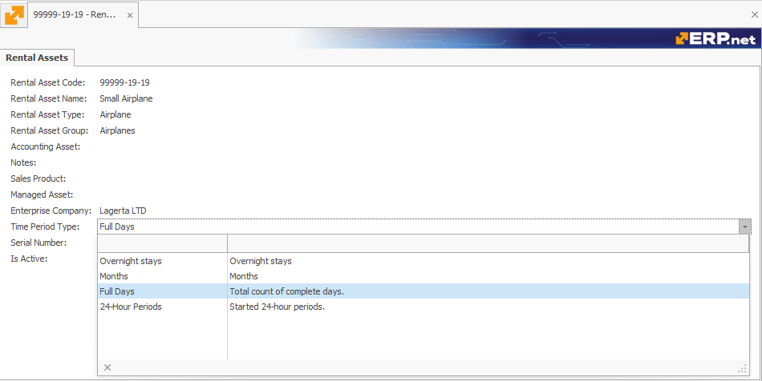
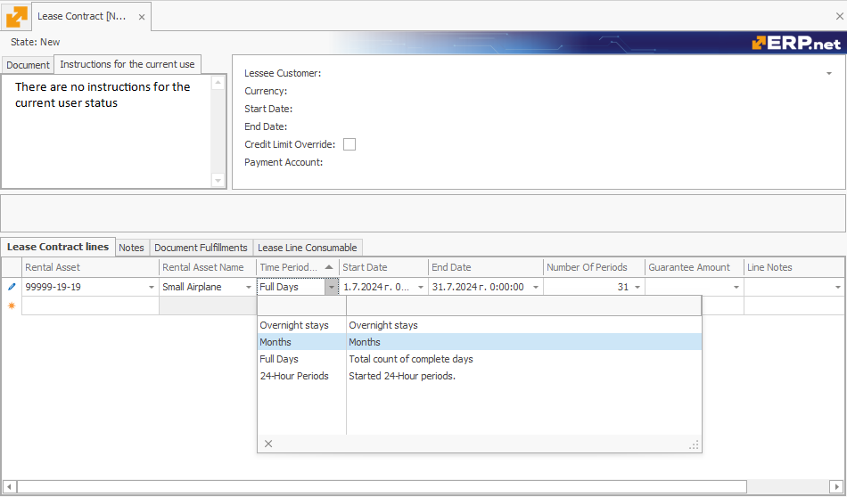
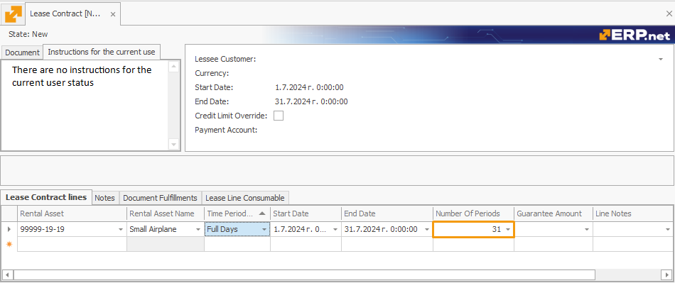
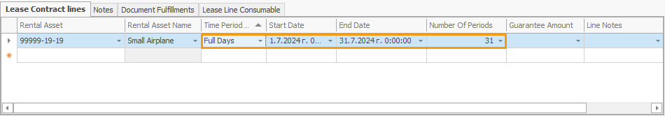
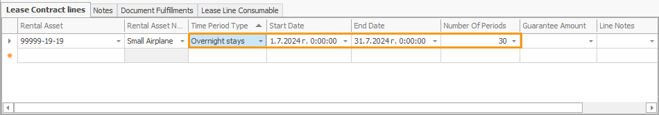
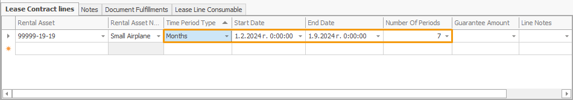

Time period types
When defining a rental asset, you can specify one of four time period types for it to determine the unit by which the periods of renting this asset will be measured. Clicking on the Time Period Type field expands it into a dropdown menu with the following options:

Options
Full Days
Calculates the total number of complete days a rental asset is used, including the specified start and end date.
It does not consider the receive and delivery hours specified in the respective Receive and Delivery transactions.
24-Hour Periods
Calculates all started 24-hour periods, taking into account the receive and delivery times specified in the respective transactions.
If no protocols are generated in addition to the contract, it functions like the Full Days setting.
Overnight Stays
Calculates the number of nights, or how many times the date in a specified period changes.
Months
Calculates the number of months full calendar months, taking into account months with 28, 29, 30 and 31 days.
It is ideal for long-term rentals, providing an easy way to calculate monthly rental periods.
Changing the Time Period Type
Each rental asset you add to a lease contract will assume its default time period type value assigned during its definition.
This value will be automatically reflected in the lease contract line the rental asset is added to.
However, you can always change it at any point prior to releasing the document.
Note
The time period type of a rental asset specified in the lease contract lines is prioritised over the one provided in its definition.

Number of periods
Based on the Start and End date of the lease, as well as the Time Period Type specified for the asset, an additional Number of Periods field is automatically calculated. It reveals how many full days, 24-hour periods, overnight stays, or months the asset will be leased for.

This automatic calculation applies for the lease contracts lines containing the respective rental asset(s), as well as for the lines of subsequently generated transaction protocols of type "Receive" and "Write Off Not Returned".
Note
The Number of Periods for a Receive transaction will be calculated only after the previously generated Deliver transaction from the same document flow is set to Released.
In addition, once a lease contract is generated, the subsequently generated sales order accounting for the rent will base its Quantity field on the calculcated Number of Periods field.
Warning
If you modify the rental asset, as well as the Start and/or End date fields for a Lease contract, a Receive transaction, or a Write Off Not Returned transaction, the respective documents from the document flow will be re-generated, and the value of the Number of Periods field will be re-calculated.
Examples for calculating Number of Periods in Lease contract lines
The following examples show how the Number of Periods field is calculcated in the lease contract lines.
Keep in mind that the hours for delivering and receiving the rental asset are not taken into account.
Full Days
- Start Date: July 1, 2024
- End Date: July 31, 2024
Number of Periods: 31

24-Hour Periods
- Start Date: July 1, 2024
- End Date: July 31, 2024
Number of Periods: 31

Overnight Stays
- Start Date: July 1, 2024
- End Date: July 31, 2024
Number of Periods: 30

Months
- Start Date: February 1, 2024
- End Date: September 1, 2024
Number of Periods: 7

Examples for calculating Number of Periods in Receive transaction lines
The following examples show how the Number of Periods field is calculcated in the receive transaction lines.
Keep in mind that the hours for handing over and receiving the rental asset are taken into account.
Full Days
- Start Date: July 1, 2024, 10:00 AM
- End Date: July 31, 2024, 9:15 AM
Number of Periods: 31
OR
- Start Date: July 1, 2024, 10:00 AM
- End Date: July 31, 2024, 6:30 PM
Number of Periods: 31
24-Hour Periods
- Start Date: July 1, 2024, 10:00 АM
- End Date: July 31, 2024, 9:15 АM
Number of Periods: 30
OR
- Start Date: July 1, 2024, 10:00 AM
- End Date: July 31, 2024, 6:30 PM
Number of Periods: 31
Overnight Stays
- Start Date: July 1, 2024, 10:00 АM
- End Date: July 31, 2024, 9:15 AM
Number of Periods: 30
OR
- Start Date: July 1, 2024, 10:00 AM
- End Date: July 31, 2024, 6:30 PM
Number of Periods: 30
Months
- Start Date: February 1, 2024, 10:00 AM
- End Date: September 1, 2024, 9:15 AM
Number of Periods: 7
OR
- Start Date: February 1, 2024, 10:00 AM
- End Date: September 1, 2024, 6:30 PM
Number of Periods: 7
Note
The screenshots taken for this article are from v24 of the platform.